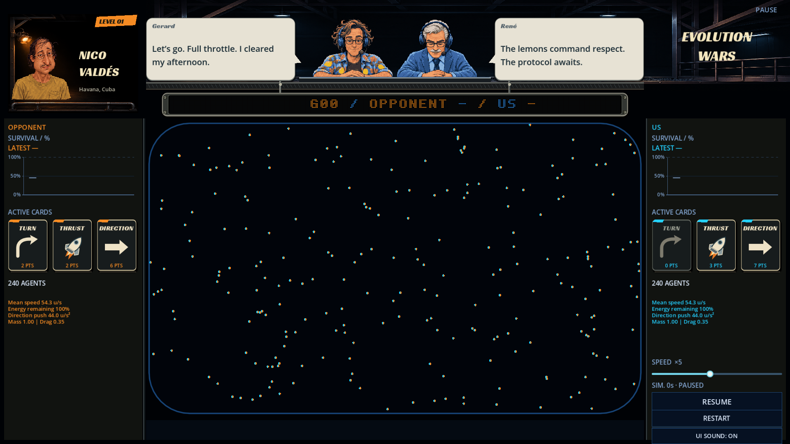
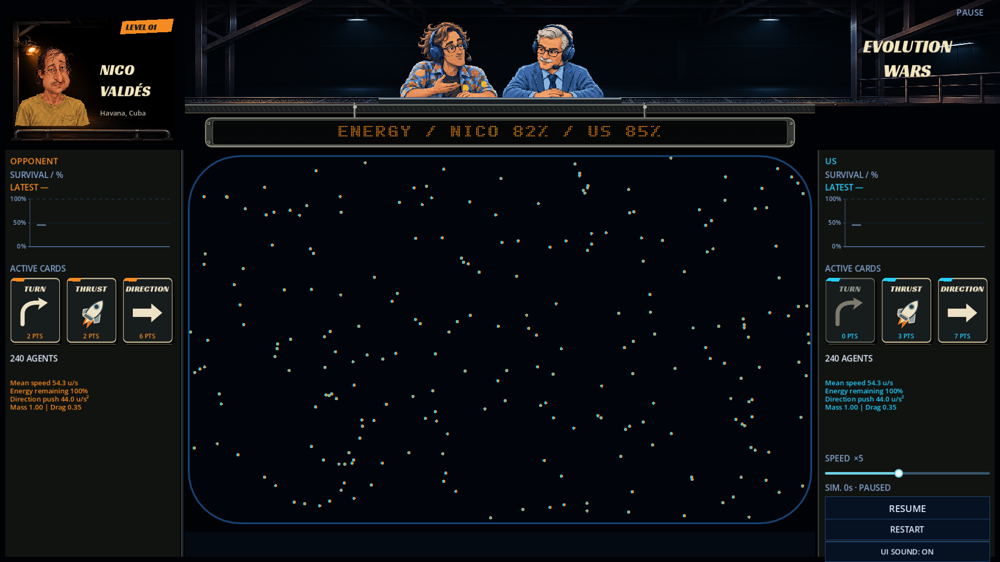
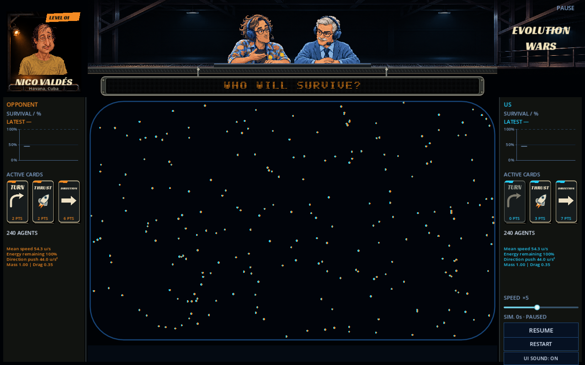
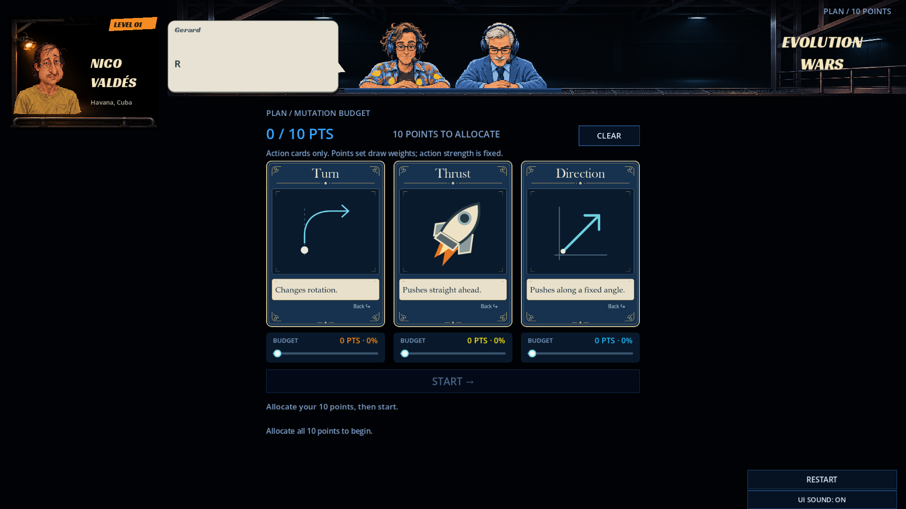
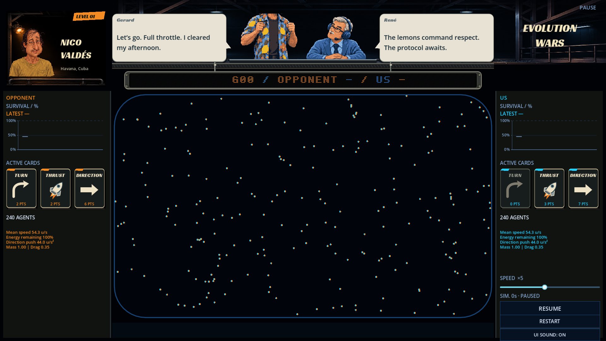

Captures réelles de Godot. Décor continu, sprites indépendants, bulles temporaires et panneau suspendu devant la table. Nico garde son coin éclairé. Les cartes actives occupent une seule rangée ; Thrust utilise une fusée avec un jet chaud.





Maquette approuvée et comparaison précédente · Prompts des décors. Les valeurs du ruban dans les captures tardives sont des messages de revue graphique. Le PVP et les changements de deck en direct restent une étape séparée.